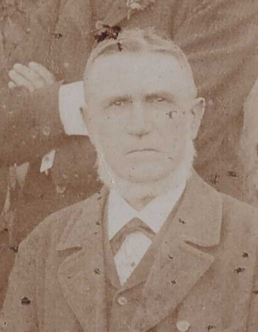

Ancis Āboltiņš b. 1839
Father of Alma Leontīne Āboltiņa, wife of Peter's great-great-uncle Dāvis Sirlaks.
Ancis Āboltiņš was born on 27 Feb 1839 (according to an online family tree)1. He married Dārta Āboltiņa on 25 Oct 1874 in Salaca parish, Vidzeme, Latvia (according to an online family tree)4. He has died (according to an online family tree)3, but the date of death is not yet documented.
Family
- Wife
- Dārta Āboltiņa b. 1855 · married on 25 Oct 1874 in Salaca parish, Vidzeme, Latvia4
- Children
- Alma Leontīne Āboltiņa 1887–1959 documented
- Zelma Āboltiņa 1883–1960 documented
- Voldemārs Āboltiņš b. 1875 documented
- Alīda Āboltiņa b. 1878 documented
- Alfrēds Āboltiņš b. 1887 documented
Life events
| Event | Date | Place and details |
|---|---|---|
| Born | 27 Feb 1839 | Old Style (Julian) date: 15 Feb 1839 According to an online family tree1 |
| Married | 25 Oct 1874 | with Dārta Āboltiņa Salaca parish, Vidzeme, Latvia Old Style (Julian) date: 13 Oct 1874 According to an online family tree4 |
| Work | Ļekunkas, Salaca parish, Vidzeme, Latvia Tailor and informal village teacher; very pious. Wife Dārta. Family farm "Ļekunkas" near Salaca/Salacgrīva (the funeral meal of his daughter Zelma was held there c. 1960, p. 25). Dates not given.2 | |
| Died | not yet documented | According to an online family tree3 |
Photographs

Sources
- MyHeritage family tree 'Dzimta' of Peter's third cousin (his family site), member GEDCOM export of 26 Oct 2026, I22 (person-6000022), GEDCOM lines 936–968.
BIRT · 15 FEB 1839
Date: read as Julian (Old Style), like his other church-book dates before 1918: = 27 Feb 1839 (Gregorian); he does not say which calendar. His note: https://www.raduraksti.arhivi.lv/objects/1:4:11:2055:2487:24454#&gid=1&pid=7, frame 7, entry 17 (birth); married: https://www.raduraksti.arhivi.lv/objects/1:4:11:2055:2487:24469#&gid=1&pid=33, frame 33, entry 19.
- Ainas Sirlakas atmiņas ("Vīstuči"), Aina Jurciņa née Sirlaka, Priekuļi, 1998, p. 23, section "MŪSU MAMMA, DĀRTAS UN ANČA MEITA".
Ļoti dievbijīgi. Ancis- drēbnieks. mācīja 13 saimnieku un kalpu bērniem lasīt un rakstīt. Pēc uzvārda Āboltiņi. Alma gribēja skoloties. Sakrāja naudu. Vajadzēja atdot “Ļekunku” izpirkšanai.
Translation: Very pious. Ancis a tailor; taught 13 farmers' and farmhands' children to read and write. By surname Āboltiņš. Alma wanted to study. She saved money. It had to go to buying out "Ļekunkas".
Tailor and informal village teacher; very pious. Wife Dārta. Family farm "Ļekunkas" near Salaca/Salacgrīva (the funeral meal of his daughter Zelma was held there c. 1960, p. 25). Dates not given.
- MyHeritage family tree 'Dzimta' of Peter's third cousin (his family site), member GEDCOM export of 26 Oct 2026, I22 (person-6000022), GEDCOM lines 936–968.
DEAT · Y (marked deceased; no date or place)
- MyHeritage family tree 'Dzimta' of Peter's third cousin (his family site), member GEDCOM export of 26 Oct 2026, family F10 (I22 Ancis Āboltiņš × I23 Dārta Āboltiņa).
MARR 1874.gada 13. Okt Salacas pagasts
read as Julian (Old Style), like his other church-book dates before 1918: = 25 Oct 1874 (Gregorian); he does not say which calendar